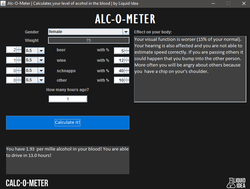
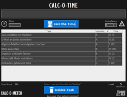

Calc-O-Meter
Dieser Artikel wurde für die folgenden Ubuntu-Versionen getestet:
Ubuntu 16.04 Xenial Xerus
Ausbaufähige Anleitung
Dieser Anleitung fehlen noch einige Informationen. Wenn Du etwas verbessern kannst, dann editiere den Beitrag, um die Qualität des Wikis noch weiter zu verbessern.
Anmerkung: Die Beschreibung des Programms Calc-O-Time ist zu kurz und müsste ausgebaut werden.
Zum Verständnis dieses Artikels sind folgende Seiten hilfreich:
Calc-O-Meter  (oder kurz C.O.M.) ist eine Sammlung von Java-Programmen. Die Sammlung umfasst den Zeitplaner "Calc-O-Time" und das Hilfsprogramm zur Abschätzung der Promillezahl.
(oder kurz C.O.M.) ist eine Sammlung von Java-Programmen. Die Sammlung umfasst den Zeitplaner "Calc-O-Time" und das Hilfsprogramm zur Abschätzung der Promillezahl.
Installation¶
Für die Calc-O-Meters ist die einzige Voraussetzung die aktuelle Oracle Java-Version mit mindestens der Version 8 Update 91. Das Programm Alc-O-Meter ist auch direkt auf der Downloadseite  als .jar Datei herunterladbar und Calc-O-Time auf dessen Downloadseite .
als .jar Datei herunterladbar und Calc-O-Time auf dessen Downloadseite .
Hinweis!
Fremdpakete können das System gefährden.
Alc-O-Meter¶
 Dieses Programm schätzt Promillezahl im Blut nach Alkohlkonsum ab. Die notwendigen einzugebenden Werte sind Körpergewicht, Geschlecht und die getrunkenen alkoholischen Getränke. Die Prozentangabe des Getränkes kann auf der rechten Seite eingegeben werden. Klickt man dann auf "Calculate", erscheinen die Werte im Label unterhalb des Buttons. Des Weiteren zeigt das Programm die unterschiedlichen Effekte auf den Körper mithilfe von Text und Bild an.
Calc-O-Time¶
 Calc-O-Time ist ein Zeitmanager. Das Auswählen von "Wichtigkeit" und das Festsetzen der Zeit macht die ToDo Liste sinnvoller und besser sortiert.
- Erstellt mit Inyoka
-
 2004 – 2017 ubuntuusers.de • Einige Rechte vorbehalten
2004 – 2017 ubuntuusers.de • Einige Rechte vorbehalten
Lizenz • Kontakt • Datenschutz • Impressum • Serverstatus -
Serverhousing gespendet von